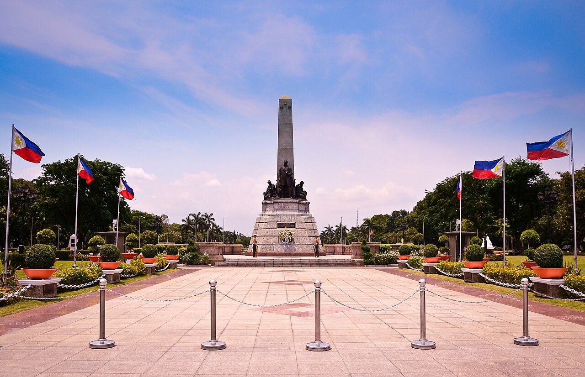

01
Museum
Manila, Philippines
I recommend museums because they are wonderful places to learn about Philippine history, culture, art, and the stories that shaped our country.
EXPLORE • DISCOVER • EXPERIENCE
Discover meaningful places in Manila where history, culture, and leisure come together.
Explore Places
ABOUT ME
Hi! My name is Darryl Naval. I created this guide to share some of the places in Manila that I recommend for people who want to explore history, culture, and relaxing destinations.
These places are meaningful because they offer different experiences while allowing visitors to appreciate the beauty and history of Manila.
MY RECOMMENDATIONS
Here are three places in Manila that I recommend for their history, culture, and relaxing atmosphere.
Manila, Philippines
I recommend museums because they are wonderful places to learn about Philippine history, culture, art, and the stories that shaped our country.

Ermita, Manila, Philippines
I recommend Luneta Park because it is an enjoyable and accessible place to visit, especially when we are dismissed early or do not have much going on at school. It is a relaxing place where we can spend time with friends, enjoy the open spaces, and take a break from our usual school activities. it is a relaxing destination where visitors can enjoy open spaces while learning about an important part of Philippine history.

Intramuros, Manila, Philippines
I recommend Intramuros because during our first year in school, we often visited the place whenever we had p.e practices. beautiful sites, and the many fun activities we could enjoy there. It became a memorable place for us because of its historical surroundings, explore historic architecture, and learn about important stories from the country's past.